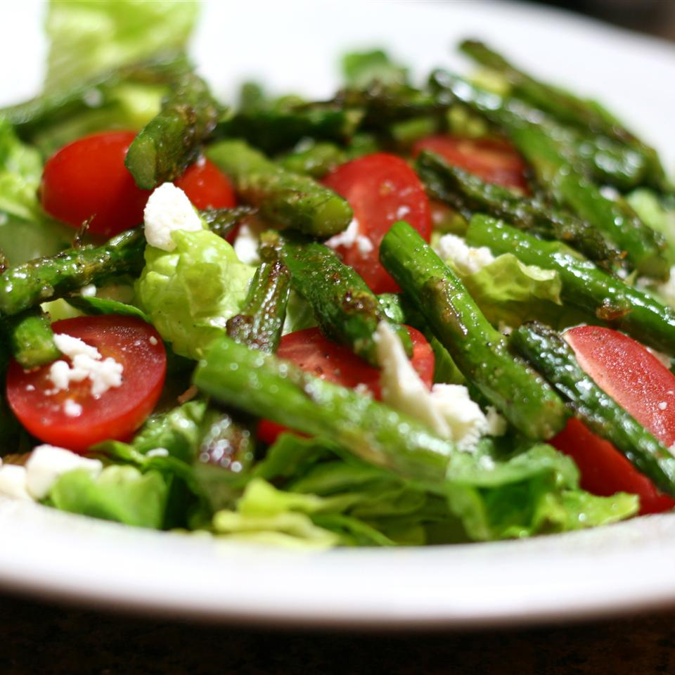

Roasted Asparagus Salad with Feta Cheese

Description
I was trying to come up with a flavorful salad that did not need dressing.
Ingredients
- 1 bunch fresh asparagus, trimmed and cut into bite-size pieces
- 2 tablespoons olive oil
- 1 pinch garlic powder, or to taste
- 4 cups lettuce leaves, cut into bite-size pieces
- 1 cup grape tomatoes, halved
- ½ cup crumbled feta cheese
Steps
- Preheat oven to 400 degrees F (200 degrees C).
- Place asparagus in a large bowl. Drizzle olive oil over asparagus and season with garlic powder; toss well. Transfer asparagus to a baking sheet.
- Bake in the preheated oven until asparagus are tender, about 20 minutes.
- Place lettuce in the same bowl used for asparagus; top with tomatoes, feta cheese, and asparagus.